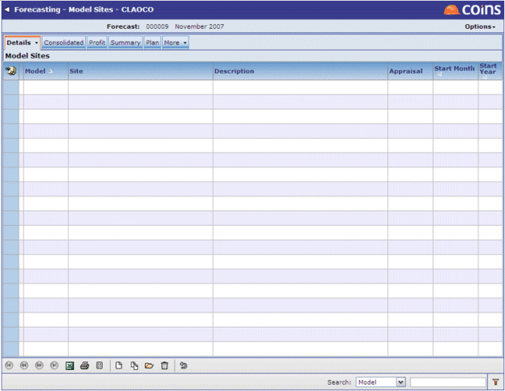
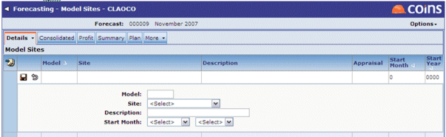

Model Sites
Model Sites allows developments to be added to the forecast that represent future developments, even though the sites themselves may not have been identified yet.

Unlike current sites, model sites are appraisals that are not based on real development opportunities, but model the kind of sites that are expected to be completed in the future. Over a longer term forecast, future sites may not have been identified but these can still be cash flowed and included in Forecasting.
To add Model Sites
- Select the site to be used from the drop-down list. The cashflow appraisal attached to that site will be used in the forecast.
- Select the month and year in which the model site is scheduled to start (this is independent of any start date used in ).
- Add model sites to a forecast using
 .
.
The following fields become available for update:

Setting up Model Sites
Adding sites in this way, by choosing them from , allows the same model to be used more than once in a forecast so that it is not necessary to create more than one model of the same size and scope.